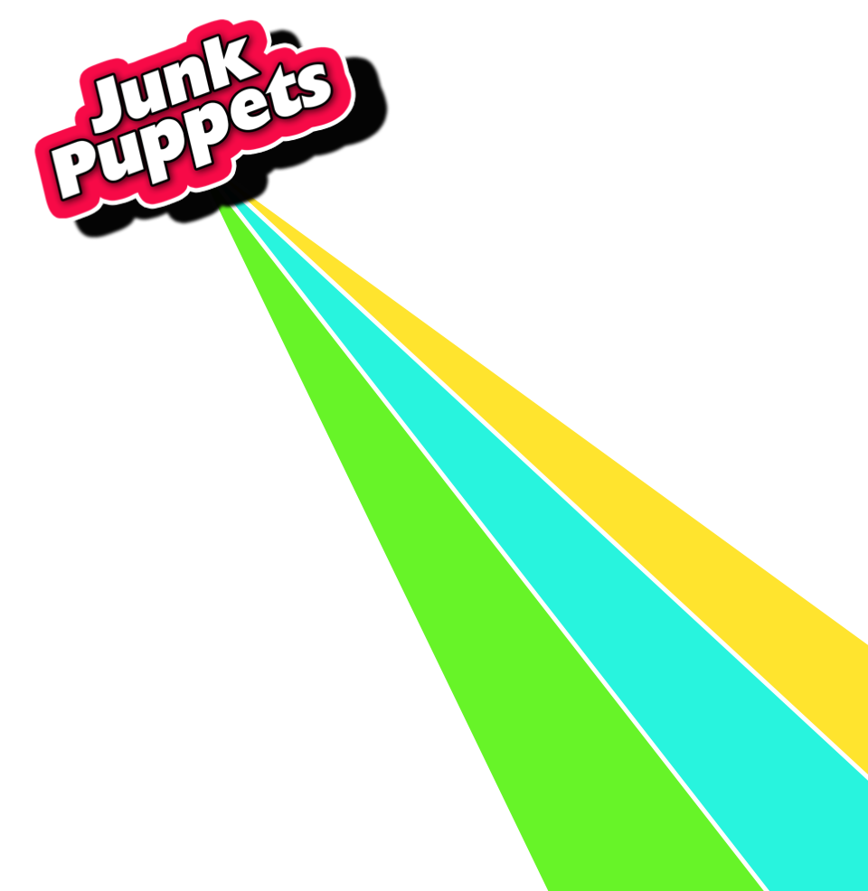

Covers
 Images
Videos
Biography
Releases
Home
Contact
Images
Videos
Biography
Releases
Home
Contact
Biography
Now - Playing rock, pop and a huge serving of 80’s cheese Junk Puppets (Dave, Ken, Russ and Clive) can be found filling up dance floors in pubs and clubs. Available for all functions, weddings and events either with a mixed set or 80’s only for your themed event. (See the covers page for more information)
History - Junk Puppets formed in 1998 by accomplished musicians Dave Badger (vocals & guitar) and Wayne Dabner (lead guitar) initially as a studio project. After writing and recording sessions were complete Greg (bass) and Thorin “Fozzy” Dixon joined the fold to hit the stage.
For years the band travelled the country playing pubs, industry venues and festivals to rave reviews and gaining an ever increasing number of fans along the way. In 1999 Greg left the area and Ken Norman joined on bass guitar. More gigs, industry interest and cd releases followed.
After being signed and watching the label go bankrupt before the release of the debut album the band released a re-recorded self financed album “Tested and Tried” in 2002.
In 2003 the band became a three piece with the departure of Wayne. The slim lined Junk Puppets released the second album “Nothing to me now” in 2004.
Meet the band